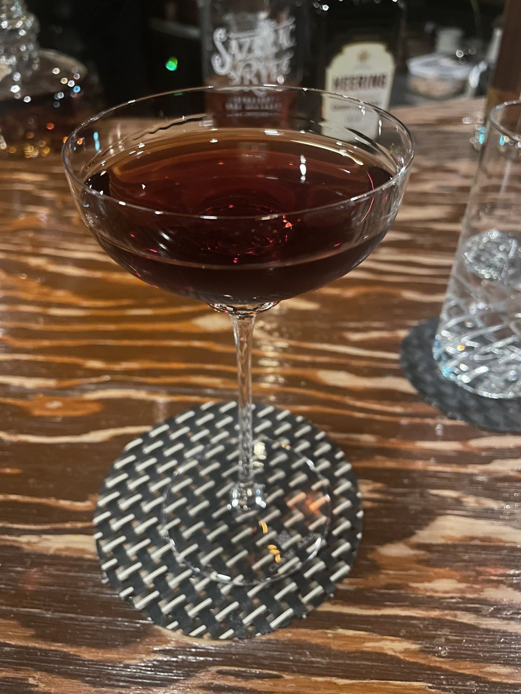

ハンター
Hunter
ショートアルコールカクテルグラスWhiskey ベース

材料
| ライウイスキー | 45 ml |
|---|---|
| チェリーブランデー | 15 ml |
作り方
ミキシンググラスにライウイスキーとチェリーブランデーを入れ、氷を加えてステアする。冷やしたカクテルグラスに漉し入れる。ライ麦の辛口とチェリーの甘やかさが鋭く重なる、狩人の名を冠した骨太なクラシック。
画像: Hunter by piggest / Original (本人撮影)
CocktailShelf で他のカクテルも探す
所持している材料から作れるカクテルを探したり、お気に入りを保存したり。トップページへ